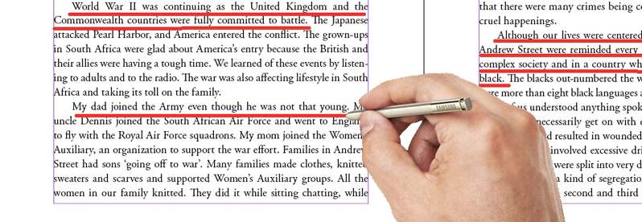
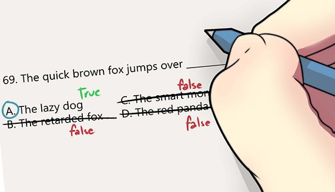

IELTS Reading Tips for band 9
Getting band 9 in IELTS Reading is possible!
Many test-takers have been writing to us with the notion that it’s an impossible task for non-native English speakers. They say, “Scoring 9.0 on IELTS Reading is very hard for those, whose first language is not English. They simply cannot know all that tricky vocabulary”. Of course, you will encounter some unknown words on the IELTS Reading Test. But you shouldn’t worry – it’s completely normal!
The main goal of IELTS Reading is to test your ability to understand what you have read. So even if you don’t know some words, it’s OK, as you can guess their meaning and still get band 9!
Ridiculously, most of the test-takers lose marks not because of lack of knowledge, but because of making very simple mistakes! That’s why in this guide we’ve gathered 10 IELTS Reading tips that will really help you to get a high score in IELTS Reading:
Skim over and watch for the answers
Skimming refers to looking only for the main ideas. You don't need to read attentively every word. Remember, you just need to answer the questions, nothing more. So skim over the text and then start looking for the answers.
Watch your time
Don’t forget you have only 60 minutes to read three texts and answer 40 questions. You won’t get additional time for filling your answer sheet, so make sure manage your time properly.
Is your spelling correct?
Check your spelling before writing your answer on the answer blank. You will get zero points for the answer if it's spelled incorrectly.
Keep the order
Remember that the questions follow the order of the text in most cases. So the answer to question 5 will come after the answer to question 4 and so on.

Underline!
When you skim over the text, underline the most important phrases. It will help you to save some time when you will search for answers.
Unfamiliar vocabulary? That's OK!
Do not worry if the text seems unfamiliar to you or you don’t know some words. Every answer can be found in the text, you don’t need any additional knowledge to succeed.
Pay attention to the details
Look thoroughly through the text. Any special features such as capital letters, underlining, italics, figures, graphs and tables are likely to matter.
No blank boxes
Answer all the questions, even if you’re not sure in your answer. You don't get penalty for wrong answers, so try your luck and write the most probable answer.

Cross out the wrong answers
If you saw answer that you're sure is wrong, cross it out. This way you won't get confused and save your time.
Choose your own technique
It may sound strange at first, but... There is no ultimate advice which technique fits you the best. You should choose yourself how to search for right answers and what to do first: read questions or text. A lot successful candidates prefer to read the text first, and only then answer the questions. But some say it's better to do the other way. Practise doing IELTS Reading samples to determine which technique fits you more.
Follow these IELTS Reading tips and you will definitely increase your score. But also don't forget that reading practice is crucial for success on IELTS Reading. So here are some useful resources for you: